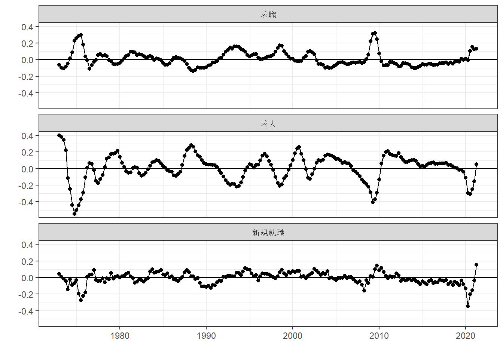
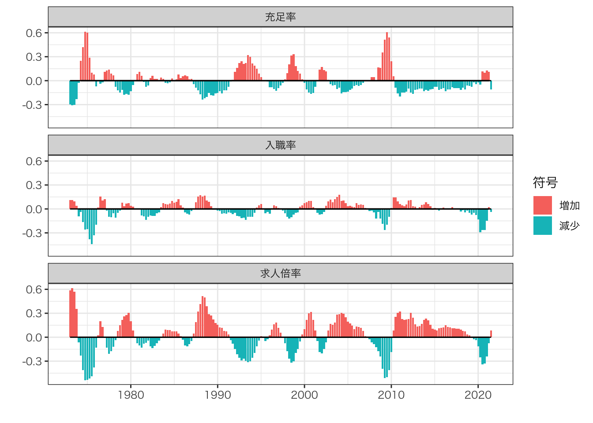

Chapter 2 記述統計量
- 1963年から2021年6月までの月次データを用いて、厚生変化を記述する
2.1 方法
４半期ごとに集計する
季節性を除去するために、前年同月からの変化率を報告
\[\frac{Y_{year,quaterly}-Y_{year-1,quaterly}}{Y_{year-1,quaterly}}\]
2.2 求人/求職/就職件数
- 有効求人件数、有効求職者件数、新規就職件数の推移を記述する
2.2.1 Rコード
pacman::p_load("tidyverse",
"readxl",
"lubridate")col.label <-
c("year",
"1",
"2",
"3",
"4",
"5",
"6",
"7",
"8",
"9",
"10",
"11",
"12",
"type",
"group")
select.raw <- 14:63
select.column <- c(1,3:14)
raw.vacancy.full <-
read_excel("data/第6表.xlsx",
sheet = "第６表ー２（パート除く）") %>%
.[select.raw,select.column] |>
mutate(type = "求人",
group = "フルタイム")
colnames(raw.vacancy.full) <- col.label
raw.seeker.full <-
read_excel("data/第7表.xlsx",
sheet = "第７表ー２（パート除く）") %>%
.[select.raw,select.column] |>
mutate(type = "求職",
group = "フルタイム")
colnames(raw.seeker.full) <- col.label
raw.hir.full <-
read_excel("data/第8表.xlsx",
sheet = "第８表ー２（パート除く）") %>%
.[select.raw,select.column] |>
mutate(type = "新規就職",
group = "フルタイム")
colnames(raw.hir.full) <- col.label
raw.vacancy.part <-
read_excel("data/第6表.xlsx",
sheet = "第６表ー３（パート）") %>%
.[select.raw,select.column] |>
mutate(type = "求人",
group = "パートタイム")
colnames(raw.vacancy.part) <- col.label
raw.seeker.part <-
read_excel("data/第7表.xlsx",
sheet = "第７表ー３（パート）") %>%
.[select.raw,select.column] |>
mutate(type = "求職",
group = "パートタイム")
colnames(raw.seeker.part) <- col.label
raw.hir.part <-
read_excel("data/第8表.xlsx",
sheet = "第８表ー３（パート）") %>%
.[select.raw,select.column] |>
mutate(type = "新規就職",
group = "パートタイム")
colnames(raw.hir.part) <- col.label
df <-
rbind(raw.hir.full,
raw.hir.part,
raw.vacancy.full,
raw.vacancy.part,
raw.seeker.full,
raw.seeker.part
) |>
pivot_longer(cols = 2:13,
names_to = "month",
values_to = "n") |>
mutate(n = n |> as.numeric(),
year = year |> str_sub(1,4) |> as.numeric(),
month = month |> as.numeric(),
quaterly = month |> cut(c(0,3,6,9,12), labels = c(1,2,3,4)),
date = yq(str_c(year,quaterly,sep = ":Q"))
) |>
group_by(date,type) |>
mutate(n = n |> sum()) |>
ungroup() |>
distinct(year,quaterly,date,type,n) |>
spread(key = type, value = n) |>
group_by(quaterly) |>
mutate(求人 = (求人- lag(求人))/lag(求人),
求職 = (求職 - lag(求職))/lag(求職),
新規就職 = (新規就職 - lag(新規就職))/lag(新規就職)
) |>
ungroup() |>
pivot_longer(cols = c(4:6),
names_to = "type",
values_to = "N") |>
na.omit()
fig <-
df |>
mutate(符号 = if_else(N >= 0, "増加", "減少")) |>
ggplot(aes(x = date,
y = N,
fill = 符号)
) +
geom_bar(stat = "identity") +
geom_line(aes(y=0)) +
facet_wrap(~type,
ncol = 1) +
ylab("") +
xlab("") +
theme_bw(base_family = "HiraKakuPro-W3") 2.2.2 結果

求人と景気の正循環、求職と景気の反循環を再確認できる
- オイルショックやバブル崩壊、リーマンショック後の不況期において、求人の低下、求職の増加が認められる
COVID-19の影響を反映していると考えられる2020年第2・3四半期の求人急落および第3四半期以降の求職増加はオイルショックやリーマンショックほどではないが、90年代のバブル崩壊後落ち込みを超える水準であった。
- 顕著な特徴は、2020年第2四半期の新規就職件数急落が、他の経済ショック期と比べても大きい点である。 求人・求職の変化と比べても大きく、COVID-19が採用・入職の手控えを強力に促進した可能性が高い。
2.3 入職/充足/求人倍率
基準化した指標を用いて、求職市場の推移を記述する
入職率 \(=\) 新規就職件数/有効求職件数
充足率 \(=\) 新規就職件数/有効求人件数
求人倍率 \(=\) 有効求人件数/有効求職件数
2.3.1 Rコード
col.label <-
c("year",
"1",
"2",
"3",
"4",
"5",
"6",
"7",
"8",
"9",
"10",
"11",
"12",
"type",
"group")
select.raw <- 14:63
select.column <- c(1,3:14)
raw.vacancy.full <-
read_excel("data/第6表.xlsx",
sheet = "第６表ー２（パート除く）") %>%
.[select.raw,select.column] |>
mutate(type = "求人",
group = "フルタイム")
colnames(raw.vacancy.full) <- col.label
raw.seeker.full <-
read_excel("data/第7表.xlsx",
sheet = "第７表ー２（パート除く）") %>%
.[select.raw,select.column] |>
mutate(type = "求職",
group = "フルタイム")
colnames(raw.seeker.full) <- col.label
raw.hir.full <-
read_excel("data/第8表.xlsx",
sheet = "第８表ー２（パート除く）") %>%
.[select.raw,select.column] |>
mutate(type = "新規就職",
group = "フルタイム")
colnames(raw.hir.full) <- col.label
raw.vacancy.part <-
read_excel("data/第6表.xlsx",
sheet = "第６表ー３（パート）") %>%
.[select.raw,select.column] |>
mutate(type = "求人",
group = "パートタイム")
colnames(raw.vacancy.part) <- col.label
raw.seeker.part <-
read_excel("data/第7表.xlsx",
sheet = "第７表ー３（パート）") %>%
.[select.raw,select.column] |>
mutate(type = "求職",
group = "パートタイム")
colnames(raw.seeker.part) <- col.label
raw.hir.part <-
read_excel("data/第8表.xlsx",
sheet = "第８表ー３（パート）") %>%
.[select.raw,select.column] |>
mutate(type = "新規就職",
group = "パートタイム")
colnames(raw.hir.part) <- col.label
df <-
rbind(raw.hir.full,
raw.hir.part,
raw.vacancy.full,
raw.vacancy.part,
raw.seeker.full,
raw.seeker.part
) |>
pivot_longer(cols = 2:13,
names_to = "month",
values_to = "n") |>
mutate(n = n |> as.numeric(),
year = year |> str_sub(1,4) |> as.numeric(),
month = month |> as.numeric(),
quaterly = month |> cut(c(0,3,6,9,12), labels = c(1,2,3,4)),
date = yq(str_c(year,quaterly,sep = ":Q"))
) |>
group_by(date,type) |>
mutate(n = n |> sum()) |>
ungroup() |>
distinct(year,quaterly,date,type,n) |>
spread(key = type, value = n) |>
group_by(quaterly) |>
mutate(充足率 = (新規就職/求人- lag(新規就職/求人))/lag(新規就職/求人),
入職率 = (新規就職/求職 - lag(新規就職/求職))/lag(新規就職/求職),
求人倍率 = (求人/求職 - lag(求人/求職))/lag(求人/求職)
) |>
ungroup() |>
pivot_longer(cols = c(7:9),
names_to = "type",
values_to = "N") |>
na.omit()
fig <-
df |>
mutate(符号 = if_else(N >= 0, "増加", "減少")) |>
ggplot(aes(x = date,
y = N,
fill = 符号)
) +
geom_bar(stat = "identity") +
geom_line(aes(y=0)) +
facet_wrap(~type,
ncol = 1) +
ylab("") +
xlab("") +
theme_bw(base_family = "HiraKakuPro-W3") 2.3.2 結果

景気と入職率|求人倍率の正循環、充足率との反循環が観察できる
COVID-19後、入職率・求人倍率が急落し、充足率の上昇がみられる
- 特に入職率の低下は、過去の不況期と比べても大きい
2021年において入職率・求人倍率の低下は下げ止まる傾向があるが、充足率の低下は続いている
2.4 環境
sessionInfo()## R version 4.1.1 (2021-08-10)
## Platform: aarch64-apple-darwin20 (64-bit)
## Running under: macOS Big Sur 11.5.2
##
## Matrix products: default
## BLAS: /Library/Frameworks/R.framework/Versions/4.1-arm64/Resources/lib/libRblas.0.dylib
## LAPACK: /Library/Frameworks/R.framework/Versions/4.1-arm64/Resources/lib/libRlapack.dylib
##
## locale:
## [1] en_US.UTF-8/en_US.UTF-8/en_US.UTF-8/C/en_US.UTF-8/en_US.UTF-8
##
## attached base packages:
## [1] stats graphics grDevices utils datasets methods base
##
## other attached packages:
## [1] lubridate_1.7.10 readxl_1.3.1 forcats_0.5.1 stringr_1.4.0
## [5] dplyr_1.0.7 purrr_0.3.4 readr_2.0.1 tidyr_1.1.3
## [9] tibble_3.1.3 ggplot2_3.3.5 tidyverse_1.3.1
##
## loaded via a namespace (and not attached):
## [1] Rcpp_1.0.7 assertthat_0.2.1 digest_0.6.27 utf8_1.2.2
## [5] R6_2.5.1 cellranger_1.1.0 backports_1.2.1 reprex_2.0.1
## [9] evaluate_0.14 highr_0.9 httr_1.4.2 pillar_1.6.2
## [13] rlang_0.4.11 rstudioapi_0.13 jquerylib_0.1.4 rmarkdown_2.10
## [17] labeling_0.4.2 munsell_0.5.0 broom_0.7.9 compiler_4.1.1
## [21] modelr_0.1.8 xfun_0.25 pkgconfig_2.0.3 htmltools_0.5.2
## [25] tidyselect_1.1.1 bookdown_0.23 fansi_0.5.0 crayon_1.4.1
## [29] tzdb_0.1.2 dbplyr_2.1.1 withr_2.4.2 grid_4.1.1
## [33] jsonlite_1.7.2 gtable_0.3.0 lifecycle_1.0.0 DBI_1.1.1
## [37] pacman_0.5.1 magrittr_2.0.1 scales_1.1.1 cli_3.0.1
## [41] stringi_1.7.3 farver_2.1.0 fs_1.5.0 xml2_1.3.2
## [45] bslib_0.3.0 ellipsis_0.3.2 generics_0.1.0 vctrs_0.3.8
## [49] tools_4.1.1 glue_1.4.2 hms_1.1.0 fastmap_1.1.0
## [53] yaml_2.2.1 colorspace_2.0-2 rvest_1.0.1 knitr_1.33
## [57] haven_2.4.3 sass_0.4.0